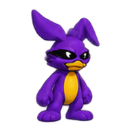

Chemical Shelf
Tap a bottle to add it. On a computer you can also drag it onto the flask. Classroom chemicals only, and every amount is dilute.
Pour size (each tap adds this much)
The Bench 500 mL Erlenmeyer flask
t = 0.0 s
Drop here
VOLUME0 mL
TEMP22.0 °C
pH--
GAS OUT0 mL
Vessel
Heat
Simple Distillation heat, boil, condense, collect
The thermometer bulb sits at the still head, right where vapor turns into the condenser. It measures the vapor, not the boiling liquid.
The Purple Rabbit Explains

1/1
Live Equation
Show the math (how the balancer works)
Cockpit
Simplified models: rate r = k(T)·[A][B]/([A]+[B]) with an Arrhenius k(T); pH from an ideal charge balance at 25 °C. For teaching, not for lab planning.
Still Cockpit
Simplified model: constant heater power, fixed heat loss, 1 atm. Ethanol mode uses idealized vapor–liquid data.